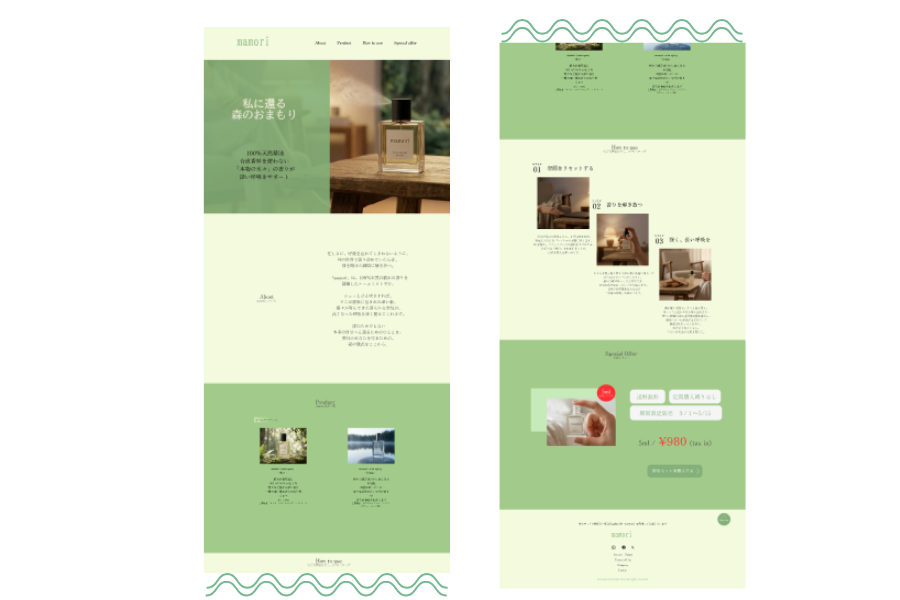
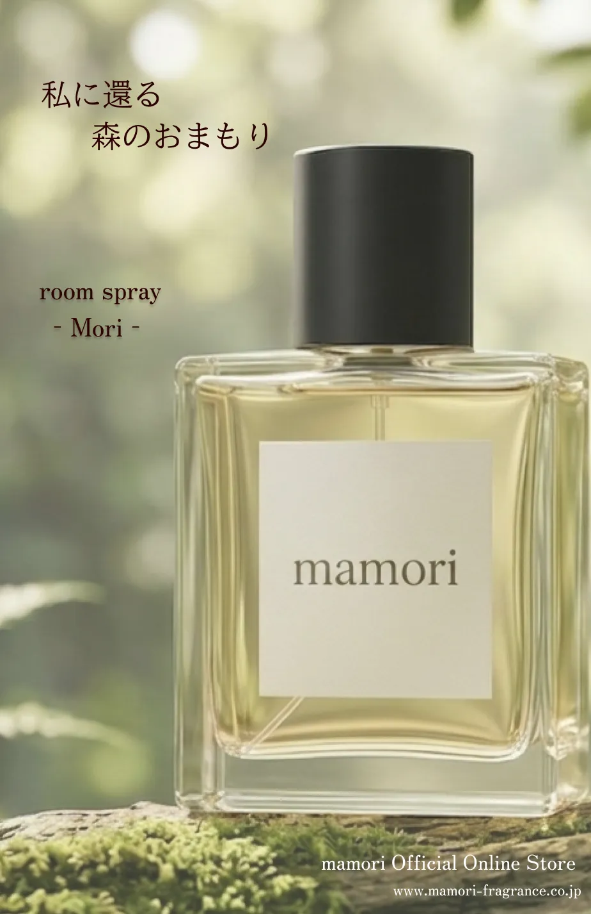
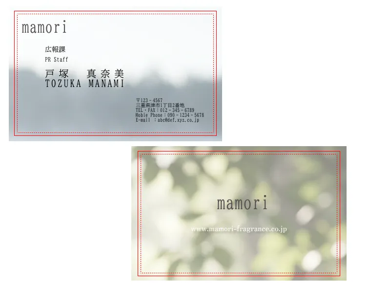

SKILL
01
UI・UX Design / Figma
Figmaを用い、ブランドの世界観を体現するUIデザインを行いました。PC用とスマホ用のページをそれぞれ作成しています。コンポーネント機能などを活用し、将来的なコーディングのしやすさを考慮したデータ構造を構築を意識しました。
02
Visual & Color Strategy / Color Hunt
仮定したコンセプトに合わせ、Color Hunt等のリサーチツールを活用してカラーパレットを選定しました。視覚的な「呼吸のしやすさ（余白感）」を意識したトーン＆マナーを設計しました。
03
Interaction & Motion / GIF Simulation
「ユーザー体験（UX）」を可視化するため、Figmaのプロトタイプ機能を使用しスクロールやボタンホバーの挙動をシミュレーションしました。サイトの読込速度に配慮し、「軽量化したGIF形式」で紹介ページに埋め込むことで、体験価値と表示速度を両立する工夫を行いました。
POINT
具体的な商品使用イメージの提示
すっきりと落ち着いたサイトデザイン
癒しや自然を感じられる配色
購入ボタンへのスムーズな誘導動線
CONCEPT
「心の穏やかさを取り戻すお守り」
依頼者様が届ける香りや世界観がサイトを通じてユーザーの元へ正しく届くこと。
訪れた人が、この商品を忙しい日々の合間に使用することで
自然と自分らしさを取り戻すことができる「お守り」となる、
そんな空気を感じられるような落ち着きのある場所を構築しました。
OTHER
広告ポスター

名刺
